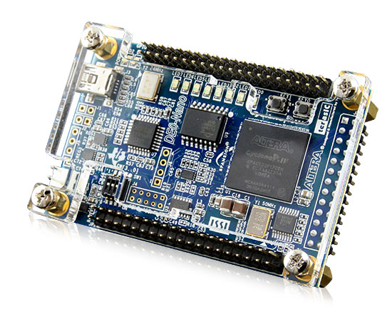
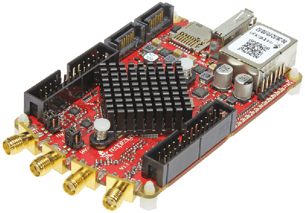
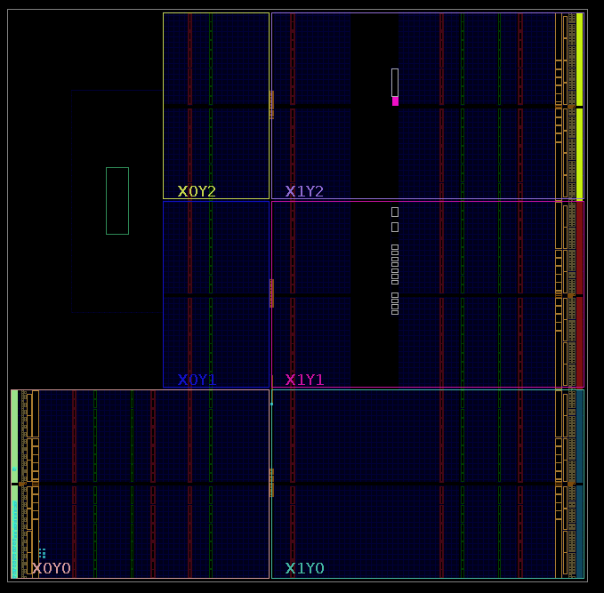
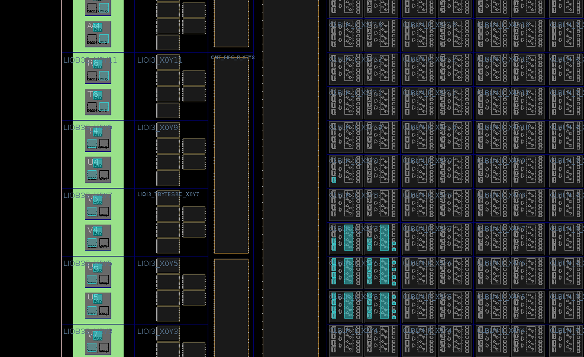
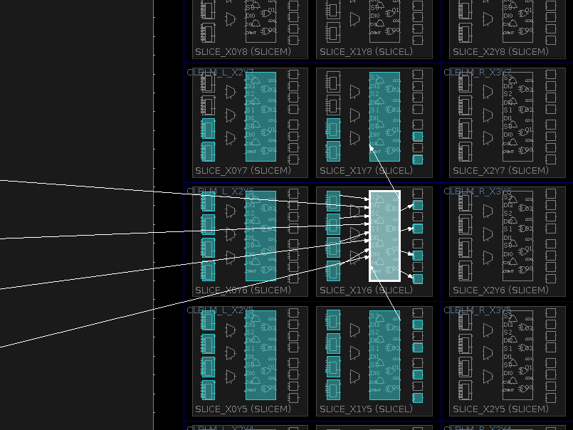
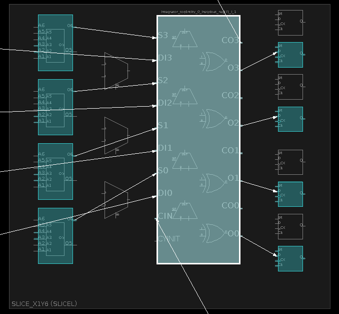

| and | or |
| xor | not |
fullAdder a b cin = (s,cout) where
t = a `xor` b
s = t `xor` cin
cout = (cin .&. t) .|. (a .&. b) register
register :: a -> Signal a -> Signal aintegrator
integrator :: Num a => Signal a -> Signal a
integrator i = r where
r = liftA2 (+) i (register 0 r) > fib = register 1 (liftA2 (+) fib (register 0 fib)) > sampleN 10 fib
[1,1,2,3,5,8,13,21,34,55]mealy :: (s -> i -> (s, o))
-> s
-> Signal i -> Signal o-- file: Integrator.hs
module Integrator where
import CLaSH.Prelude
integrator i = r where
r = liftA2 (+) i (register 0 r)
topEntity :: Signal (Signed 10) -> Signal (Signed 10)
topEntity = integrator% clash Integrator.hs --verilog % clash --interactive Integrator.hs
*Integrator> :verilog





Signed n , USigned n , SFixed i f , UFixed i fVec n a - for example (Vec 6 Bit)bundle / unbundle ex bundle :: (Signal a,Signal b) -> Signal (a,b){-# LANGUAGE GhcMagic #-}luka@rahne.si
slides: https://github.com/ra1u/ZuriHac